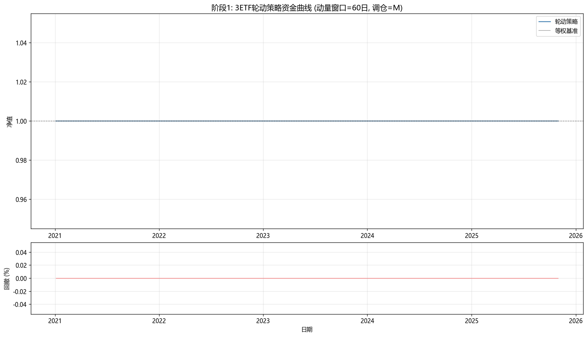
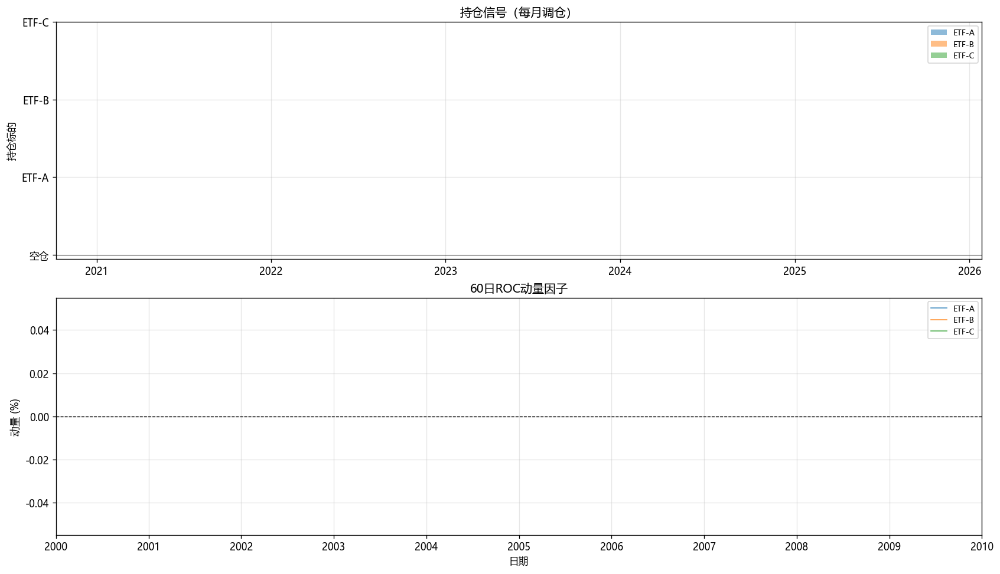
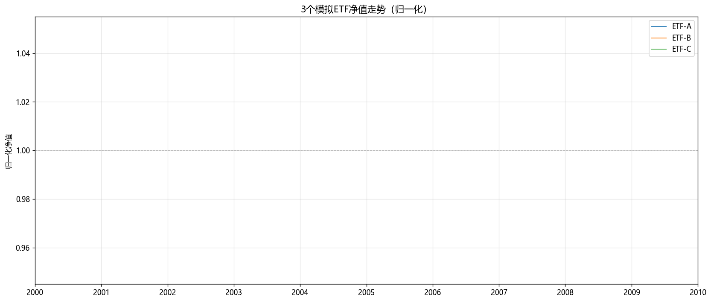

ETF轮动策略阶段1回测报告
生成时间: 2026-06-28 23:41:14
阶段1目标：验证策略框架正确性，跑通"数据→信号→回测→报告"全流程。
数据：3个模拟ETF（GBM+动量持续性+市场状态切换），5年日线数据。
策略：60日ROC动量，月频调仓，持有动量最强1只，全池动量<0空仓。
策略参数
动量窗口: 60日
调仓频率: M (月频)
持仓数量: 1只（动量最强）
空仓条件: 最强动量 < 0
交易成本: 单边0.15%（佣金万2.5+滑点万3）
信号处理: shift(1)后移一天，避免未来函数
一、绩效指标对比
|
总收益 |
年化收益 |
年化波动 |
Sharpe |
最大回撤 |
Calmar |
胜率 |
盈亏比 |
年数 |
交易日数 |
| 轮动策略 |
0.0% |
0.0% |
0.0% |
0.0 |
0.0% |
0.0 |
0.0% |
0.0 |
5.0 |
1260.0 |
| 等权基准 |
0.0% |
0.0% |
0.0% |
0.0 |
0.0% |
0.0 |
0.0% |
0.0 |
5.0 |
1260.0 |
交易成本统计：总换手=0.00, 总成本=0.00%（占初始资金比例）
二、资金曲线与回撤

说明：上图蓝线为策略净值，灰线为等权基准净值，红色阴影为回撤区间；下图为完整周期回撤曲线。
三、持仓信号与动量因子

说明：上图为每日持仓标的（堆叠面积），下图为60日ROC动量因子曲线，虚线为0轴。
四、模拟ETF净值走势

说明：3个模拟ETF归一化净值，起始=1.0。
五、阶段1结论与下一步
验证要点：
1. 策略框架是否正确跑通（数据→信号→回测→报告）
2. 轮动策略相对等权基准是否有超额收益
3. 动量因子是否能识别强弱势ETF
4. 回撤控制是否合理（全池动量<0空仓机制）
下一步（阶段2）：
- 扩展到10个模拟ETF
- 因子升级：回归动量（年化收益×R²，过滤妖基）
- 加入L1双均线过滤 + L2双止损
- 信号过滤：调仓阈值10%